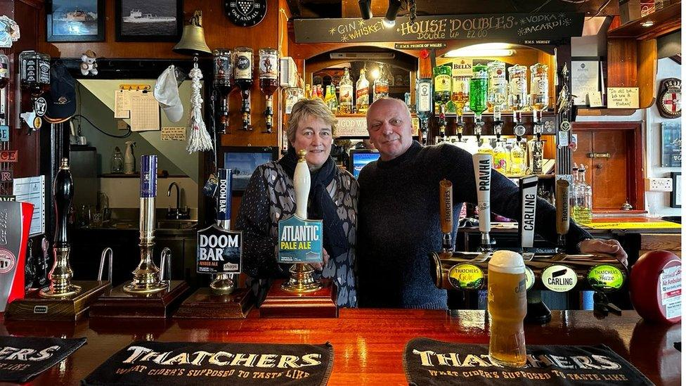

Real ales & local drinks
A strong selection of classic favourites, local pours, and pub staples served in a welcoming setting.
A Falmouth Favourite
Experience the charm of a traditional pub with a warm atmosphere, great food, and a wide selection of drinks. Whether you're stopping by for a relaxed lunch, evening pints, or a catch-up with friends — the Prince of Wales is a welcoming local in the heart of Falmouth.

Why Visit Us
From proper pub food to a warm local atmosphere, the Prince of Wales is the kind of place you can settle into any day of the week.
A strong selection of classic favourites, local pours, and pub staples served in a welcoming setting.
Hearty, comforting dishes that suit everything from a quick lunch stop to a relaxed evening meal.
Catch the big match, enjoy lively evenings, and make the pub your go-to place for shared moments.
Right in the heart of town — coastal charm, friendly service, and a true local feel.